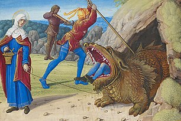

The Tarasque is a fearsome legendary dragon-like mythological hybrid from Provence, in southern France, tamed in stories about Saint Martha, such as the one told in the Jacobus de Voragine's Golden Legend (13th century). The tarasque was described as having a lion-like head, a body protected by turtle-like carapace(s), six feet with bear-like claws, and a scaly tail like a serpent's tail in a text (pseudo-Marcelle or pseudo-Marcella) which is similar to and roughly coeval with the Golden Legend, and issued poison breath according to one hagiography (pseudo-Raban Maur) of perhaps somewhat later date. Medieval iconography such as renditions in church sculpture did not necessarily conform to this description in the earlier Gothic period, and examples which seemed to were later assigned later, 14th century dates. The hexapedal carapaced tarasque was the form depicted on the city seal of Tarascon around the 15th century, and this held to be the norm in 16th-17th century paintings. As St. Martha purportedly encountered the beast in the act of swallowing a human victim, it has become a stock motif in art to portray the beast swallowing a human head first, with the victim's legs still dangling. According to tradition, in 1474 René of Anjou initiated the use of the tarasque in the Pentecostal festival, and later used also on the saint's feast day of July 29. Yearly celebration in the last weekend of June was added in the modern day. The effigy or float (French: char) of the tarasque has been built over the years for parading through town for the occasion, carried by four to a dozen men concealed inside.
In Provence, France, the creature inhabited the forested banks of the Rhône between Arles and Avignon, around what is now the town Tarascon (then called Nerluc or 'black place'), but lurked in the river and attacked the men trying to cross it, sinking boats. The creature was described a dragon, half animal, half fish, thicker than an ox, longer than a horse, with "sword-like teeth as sharp as horns". The Tarasque (Latin: Tarasconus) was said to have come from Galatia, a cross-breed between the biblical Leviathan and the legendary Onachus (or onacho, or bonacho) of Galatia, this onachus being a creature that retaliated against pursuers by flinging its dung (Latin: stercus) like an arrow, and causing burns. The people besought Saint Martha for help, and she found the creature in the act of devouring a man. Merely by sprinkling holy water and holding up the cross, she caused the creature to become submissive and obedient. She then tied her girdle (to its neck), leading the beast to the villagers who cast rocks and spears at it until it died